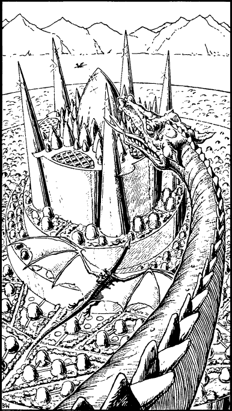

50
The shining City of Yanis lies before you, rising in circular levels around a turreted citadel of sparkling crystal which dominates the vast, alien metropolis. Constructed out of sheeted platinum, silver, glass, and mirrored steel, it reflects the light in a thousand colours from its walls, windows, and huge, conical towers, giving it the appearance and splendour of a glowing sun. As the dragonmount glides over the outer walls, you feast your eyes upon a network of broad avenues lined with fragrant, tree-like plants, squares with fountains, and huge, silver, bell-shaped dwellings.

Directly ahead stands the citadel. The leader signals once more and together the Yoacor land their winged steeds upon a glassy platform adjacent to one of the citadel’s five circular watchtowers. There you are met by Yoacor guards, resplendent in armour of burnished silver, who attend to the dragonmounts with dutiful efficiency. The leader helps you dismount before dismissing his company and escorting you to a room in the watchtower.
You will rest here, he says, using only his mind. I shall take word to the Beholder and he shall speak with you. Refresh yourself and sleep if you wish. He motions towards an adjoining room then turns and leaves, the door closing behind him seemingly of its own accord.
If you wish to investigate the adjoining room, turn to 170.
If you wish to attempt an escape from the watchtower, turn to 340.
If you choose to remain in this room, turn to 219.